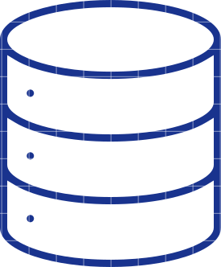
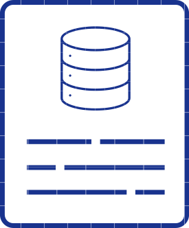
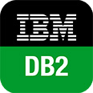
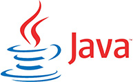

nCMS
-
1100% content site can be edited with nCMS GUI
-
2Support of hundreds of concurrent users
-
3Multi-site/domain management
-
4Marketing tools and leads management
Projects
-
FinanceFrontend and integration layer of CRM for online financial serviceUIS is a bunch of projects used in some universities in Russia, included corporate portal and SSO system.
-
EducationUIS —The ERP system for universitiesUIS is a bunch of projects used in some universities in Russia, included corporate portal and SSO system. Developed since 2006 and contains over 2 million source code lines.
-
TelecommunicationsNethouseNetwork management, billing and payment system for ISP.
-
MusicNettymusicNettymusic is a rich web based music player and radio streaming solution.
Open-source
-
EJDB Embedded JSON database engine
EJDB is the embeddable (in-process) database engine designed for querying collections of JSON documents and persisting data. EJDB is implemented as a C library based on TokyoCabinet key-value storage engine. EJDB design is inspired by Mongodb and follows the same philosophy, especially for the query language.
Project technologies: C, Cmake
EJDB language bindings developed by our team: Nodejs, Python, .Net, (C#), Ruby, Lua, Java.
-
Tokyocabinet port on windows
Our team have been ported a famous TokyoCabinet NoSQL database engine for windows platform as part EJDB project.
Technologies: C, Cmake, MXE
-
IOWOW Library
The C99 file IO library and free space management engine. This product used as basic IO layer for the next generation embedded database engine EJDB2.
Features: Basic file IO routines, Management of a file memory mmapped regions, Automatic file space expansion/truncation, Reader/writer locking of file address space among a threads, Allocation/deallocation of data blocks within a file like malloc does for memory, Simple message logging facility.
-
DB2 backup
-
minigames
Technologies
- 

- 